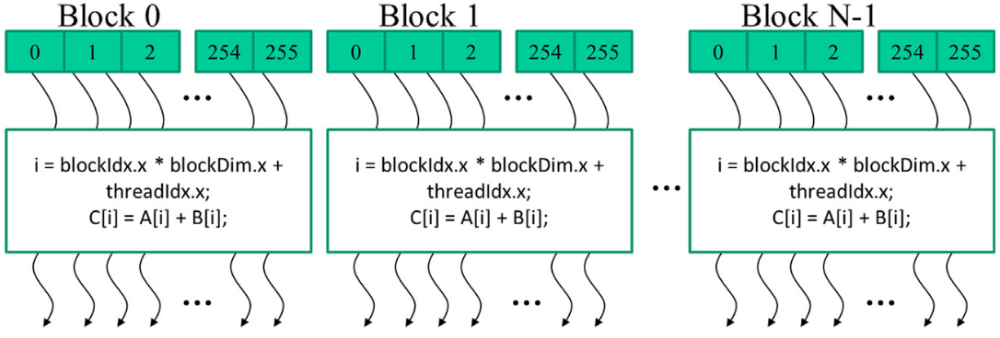
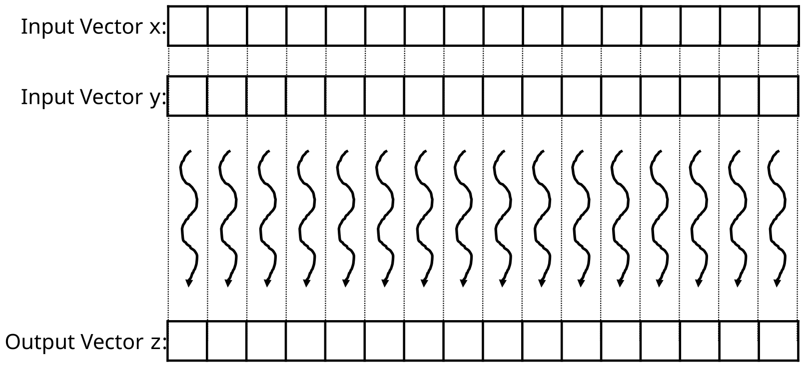
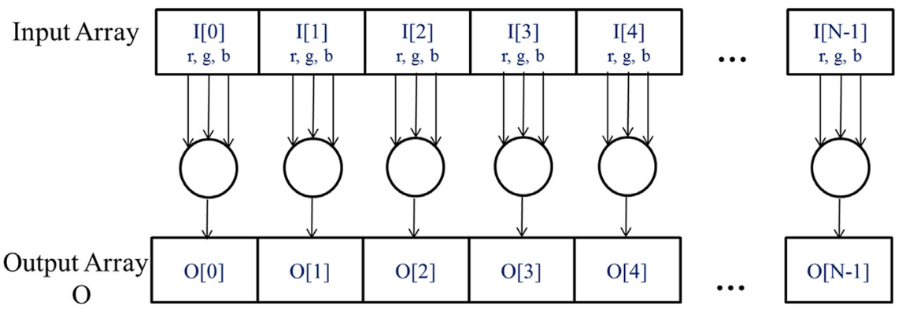
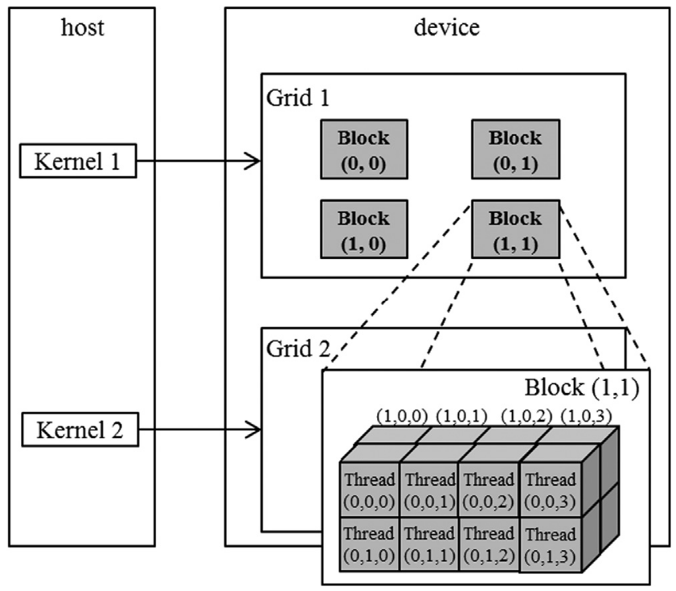
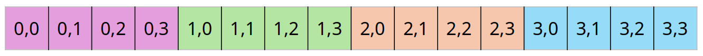
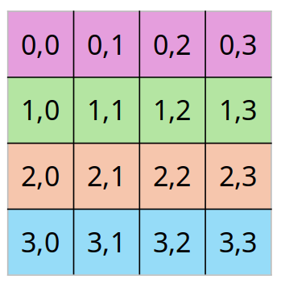
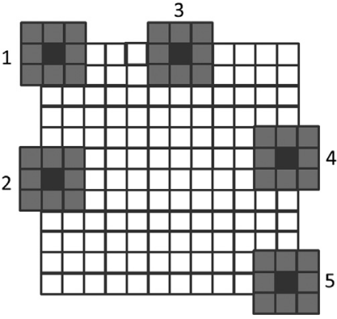
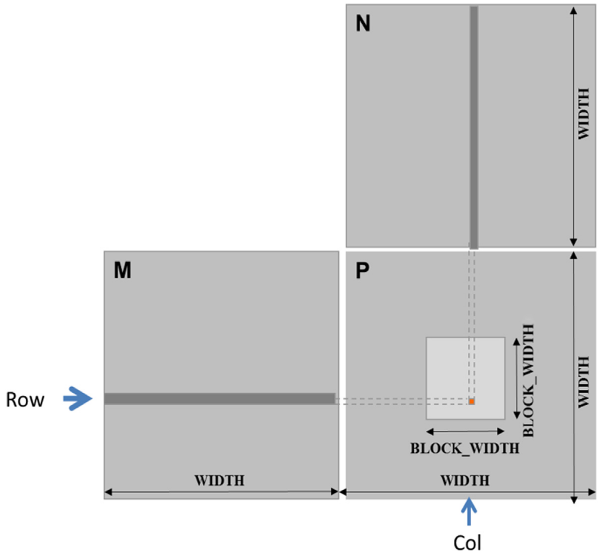

CUDA MODE Lecture 2: Ch.1-3 PMPP Book
- CUDA Mode Lecture Notes: My notes from the CUDA MODE reading group lectures run by Andreas Kopf and Mark Saroufim.
- Lecture Information
- Ch.1: Introduction
- Ch.2: Heterogeneous Data Parallel Computing
- Ch.3: Multidimensional Grids and Data
Lecture Information
Speaker: Andreas Kopf
Topic: PMPP Book Ch. 1-3
Resources:
- Lecture Slides: CUDA Mode: Lecture 2
- Textbook: Programming Massively Parallel Processors
- GitHub Repository: CUDA MODE Lecture 2
- Discord Channel: CUDA MODE
- YouTube Channel: CUDA MODE
Introduction
- Timestamp: 1:00
Motivation
Optimize GPU performance as much as possible
Applications:
- simulate and model worlds
- games
- weather
- proteins
- robotics
- simulate and model worlds
Bigger models are smarter
- speed and size improvements can have a significant impact on useability
GPUs are the backbon of modern deep learning
History
- Classic software uses sequential programs
- executed one step at a time
- relied on higher CPU clock rates for improved performance
- Higher clock rate trend for CPUs slowed in 2003 due to energy consumption and heat dissipation challenges
- Increasing frequency would make the chip to hot to cool feasibly
- Multi-core CPU came up
- Developers had to learn multi-threading
- New challenges such as deadlocks and race conditions
- Developers had to learn multi-threading
Rise of CUDA
- Compute Unified Device Architecture
- CUDA is all about parallel programs
- divide work among threads
- GPUs have much higher peak FLOPS than multi-core CPUs
- Benefits highly parallelized programs
- Not suitable for largely sequential programs
- CPU+GPU
- Run sequential parts on CPU and numerically intensive parts on GPU
- GPGPU
- Before CUDA tricks were used to compute with graphics APIs like OpenGL and Direct3D
- GPU programming is now attractive to developers due to massive availability
Amdahl’s Law
\[ speedup = ( Slow \ System \ Time )/(Fast \ System \ Time) \]
achievable speedup is limited by the parallelizable portion of \(p\)
\[ speedup < \frac{1}{1-p} \]
- If \(p\) is \(90\%\), \(speedup < 10X\)
\(p > 99\%\) for many real applications
- especially for large datasets
- speedups \(> 100X\) are attainable
Challenges
- “If you do not care about performance, parallel programming is very easy”
- In practice, designing parallel algorithms is harder than sequential algorithms
- Parallelizing recurrent computations requires nonintuitive thinking
- prefix sum
- Parallelizing recurrent computations requires nonintuitive thinking
- Speed is often limited by memory latency/throughput (memory bound)
- Often need to read something to the GPU, perform some computation, and the write back the result
- LLM inference generates token by token
- Often need to read something to the GPU, perform some computation, and the write back the result
- Input data characteristics can significantly influence performance of parallel programs
- LLMs short or large sequences
- Might need different kernels optimized for different input shapes
- Not all applications are “embarrassingly parallel”
- Synchronization imposes overhead
- Need to wait for GPU operations to complete
- Synchronization imposes overhead
Main Goals of the Book
- Parallel programming & computational thinking
- Aims to build a foundation for parallel programming in general
- Uses GPUs as a learning vehicle
- Techniques apply to other accelerators
- Concepts are introduced through hands-on CUDA examples
- Correct & reliable parallel programing
- Debugging both functions and performance
- Understanding where things are fast and slow and how to improve the slow parts
- Scalability
- Regularize and localize memory access
- How to organize memory
Heterogeneous Data Parallel Computing
Timestamp: 8:31
heterogeneous: CPU + GPU
data parallelism: break work down into computations that can be executed independently
CUDA C
- extends ANSI C with minimal new syntax
- Terminology
- CPU=host
- GPU=device
- Kernels: device code functions
- CUDA C source can be a mixture of host & device code
- grid of threads
- Many threads are launched to execute a kernel
- CPU & GPU code runs concurrently (overlapped)
- Kernels launch and run on GPU asynchronously
- Need to wait for the kernels to finish before copying data back to CPU
- Don’t be afraid to launch many threads on GPU
- One thread per output tensor is fine
CUDA Essentials: Memory Allocation
NVIDIA devices come with their own DRAM (device) global memory
cudaMalloc&cudaFree:cudaMalloc: Allocate device global memorycudaFree: Free device global memoryfloat *A_d; size_t size = n * sizeof(float); // size in bytes cudaMalloc((void**)&A_d, size); // pointer to pointer ... cudaFree(A_d);Code convention
_dfor device pointer_hfor host
cudaMemcpyCopy data from CPU memory to GPU memory and vice versa
// copy input vectors to device (host -> device) cudaMemcpy(A_d, A_h, size, cudaMemcpyHostToDevice); cudaMemcpy(B_d, B_h, size, cudaMemcpyHostToDevice); ... // transfer result back to CPU memory (device -> host) cudaMemcpy(C_h, C_d, size, cudaMemcpyDeviceToHost);
CUDA Error Handling
- CUDA functions return
cudaError_tcudaSuccessfor successful operation
- Always check returned error status
Kernel functions fn<<>>
- Launching kernel
- grid of threads is launched
- All threads execute the same code
- SPMD: Single Program Multiple Data
- Threads are hierarchically organized into grid blocks & thread blocks
- Up to 1024 threads in a thread block
Kernel Coordinates
Built-in variables available inside the kernel
blockIdx: the area code for a telephone- Note: Blocks are a logical organization of threads, not physical
threadIdx: the local phone number- These are ‘coordinates’ that allow threads to identify which portion of the data to process
- Can use
blockIdxandthreadIdxto uniquely identify threads blockDim: tells us the number of threads in a block
For vector addition, we can calculate the array index of the thread
int i = blockIdx.x * blockDim.x + threadIdx.x;
All threads in a grid execute the same kernel code

CUDA C keywords for function declaration
| Qualifier Keyword | Callable From | Executed On | Executed By |
|---|---|---|---|
__host__ (default) |
Host | Host | Caller host thread |
__global__ |
Host (or Device) | Device | New grid of device threads |
__device__ |
Device | Device | Caller device thread |
__global__&__host__- Tell the compiler whether the function should live on the device or host
- Declare a kernel function with
__global__- Calling a
__global__function launches new grid of CUDA threads
- Calling a
Functions declared with
__device__can be called from within CUDA thread- Does not launch a new thread
- Only accessible from within kernels
If both
__host__and__device__are used in a function declaration- CPU and GPU versions will be compiled
Calling Kernels
Kernel configuration is specified between
<<<and>>>Number of blocks, number of threads in each block
// Define the number of threads per block. // Each block will have 256 threads. dim3 numThreads(256); // Calculate the number of blocks needed to cover the entire vector. // Use ceiling division to ensure that the number of blocks is sufficient // to handle all elements of the vector 'n'. // The formula (n + numThreads.x - 1) / numThreads.x ensures this. dim3 numBlocks((n + numThreads.x - 1) / numThreads.x); // Launch the vector addition kernel with the calculated number of blocks and threads. // This will execute the vecAddKernel function on the GPU with 'numBlocks' blocks, // each containing 'numThreads.x' threads. vecAddKernel<<<numBlocks, numThreads>>>(A_d, B_d, C_d, n);
Compiler
- nvcc
- NVIDIA C Compiler
- Use to compiler kernels into PTX (CUDA assembly)
- PTX
- Parallel Thread Execution
- Low-level VM & instruction set
- Grahics driver translates PTX into executable binary code (SASS)
- SASS is the low-level assembly language that compiles to binary microcode, which executes natively on NVIDIA GPU hardware.
Code Example: Vector addition
main concept: replace loop with a grid of threads
easily parallelizable
- all additions can be computed independently
Naive GPU vector addition
- Allocate device memory for vectors
- Transfer inputs from host to device
- Launch kernel and perform addition operations
- Copy outputs from device to host
- Free device memory
- The ratio of data transfer vs compute is not very good
- Normally keep data on the GPU as long as possible to asynchronously schedule many kernel launches
Figure from slide 13:
- One thread per vector element

slide-13-figure Data sizes might not be perfectly divisible by block sizes
- always check bounds
Prevent threads of boundary block to read/write outside allocated memory
/** * @brief CUDA kernel to compute the element-wise sum of two vectors. * * This kernel function performs the pair-wise addition of elements from * vectors A and B, and stores the result in vector C. * * @param A Pointer to the first input vector (array) in device memory. * @param B Pointer to the second input vector (array) in device memory. * @param C Pointer to the output vector (array) in device memory. * @param n The number of elements in the vectors. */ __global__ void vecAddKernel(float* A, float* B, float* C, int n) { // Calculate the unique index for the thread int i = threadIdx.x + blockDim.x * blockIdx.x; // Check if the index is within the bounds of the arrays if (i < n) { // Perform the element-wise addition C[i] = A[i] + B[i]; } }
Code Example: Kernel to convert an RGB image to grayscale
Each RGB pixel can be converted individually
\[ Luminance = r\cdot{0.21} + g\cdot{0.72} + b\cdot{0.07} \]
Simple weighted sum

Multidimensional Grids and Data
- Timestamp: 24:55
CUDA Grid
2-level hierarchy
- Blocks and threads
Idea: Map threads to multi-dimensional data (e.g., an image)
All threads in a grid execute the same kernel
Threads in the same block can access the same shared memory
Max block size: 1024
Built-in 3D coordinates of a thread
blockIdxandthreadIdxidentify which portion of the data to process
shape of grid & blocks
gridDim: number of blocks in the gridblockDim: number of threads in a block
A multidimensional example of CUDA grid organization:

Grid can be different for each kernel launch
- Normally dependent on data shapes
Typical grids contain thousands to millions of threads
Simple Strategy
- One thread per output element
- One thread per pixel
- One thread per tensor element
- One thread per output element
Threads can be scheduled in any order
- A larger thread index does not necessarily indicate the thread is running after a thread with a lower index
Can use fewer than 3 dims (set others to 1)
1D for sequences, 2D for images, etc.
dim3 grid(32, 1, 1); dim3 block(128, 1, 1); kernelFunction<<<grid, block>>>(..); // Number of threads: 128*32 = 4096
Built-in Variables
Built-in variables inside kernels:
blockIdx // dim3 block coordinate threadIdx // dim3 thread coordinate blockDim // number of threads in a block gridDim // number of blocks in a gridblockDimandgridDimhave the same values in all threads
nd-Arrays in Memory
- memory of multi-dim arrays under the hood is a flat 1-dimensional array


2d array can be linearized in different ways
A B C D E F G H Irow-major
A B C D E F G H I- Most common
column-major
A D G B E H C F I- Used in fortran
PyTorch tensors and numpy arrays use strides to specify how elements are laid out in memory
- For a \(4 \times 4\) matrix, the stride would be \(4\) to get to the next row.
- After four elements, you end up in the next row.
- For a \(4 \times 4\) matrix, the stride would be \(4\) to get to the next row.
Code Example: Image Blur
mean filter example
blurKernel:// CUDA kernel to perform a simple box blur on an input image __global__ void blurKernel(unsigned char *in, unsigned char *out, int w, int h) { // Calculate the column and row index of the pixel this thread is processing int col = blockIdx.x * blockDim.x + threadIdx.x; int row = blockIdx.y * blockDim.y + threadIdx.y; // Ensure the thread is within the image bounds if (col < w && row < h) { int pixVal = 0; // Variable to accumulate the sum of pixel values int pixels = 0; // Variable to count the number of valid pixels in the blur region // Loop over the surrounding pixels within the blur region for (int blurRow = -BLUR_SIZE; blurRow <= BLUR_SIZE; ++blurRow) { for (int blurCol = -BLUR_SIZE; blurCol <= BLUR_SIZE; ++blurCol) { int curRow = row + blurRow; // Current row index in the blur region int curCol = col + blurCol; // Current column index in the blur region // Check if the current pixel is within the image bounds if (curRow >= 0 && curRow < h && curCol >= 0 && curCol < w) { pixVal += in[curRow * w + curCol]; // Accumulate the pixel value ++pixels; // Increment the count of valid pixels } } } // Calculate the average pixel value and store it in the output image out[row * w + col] = (unsigned char)(pixVal / pixels); } }
each thread writes one output element, read multiple values
single plane in book, can be easily extended to multi-channel
shows row-major pixel memory access (in & out pointers)
track of how many pixel values are summed
Handling boundary conditions for pixels near the edges of the image:

from pathlib import Path
import numpy as np
from PIL import Image
import torch
from torch.utils.cpp_extension import load_inline#include <torch/types.h>
#include <cuda.h>
#include <cuda_runtime.h>
#include <c10/cuda/CUDAException.h>
#include <c10/cuda/CUDAStream.h>
// CUDA kernel for applying a mean filter to an image
__global__
void mean_filter_kernel(unsigned char* output, unsigned char* input, int width, int height, int radius) {
// Calculate the column, row, and channel this thread is responsible for
int col = blockIdx.x * blockDim.x + threadIdx.x;
int row = blockIdx.y * blockDim.y + threadIdx.y;
int channel = threadIdx.z;
// Base offset for the current channel
int baseOffset = channel * height * width;
// Ensure the thread is within image bounds
if (col < width && row < height) {
int pixVal = 0; // Accumulator for the pixel values
int pixels = 0; // Counter for the number of pixels summed
// Iterate over the kernel window
for (int blurRow = -radius; blurRow <= radius; blurRow += 1) {
for (int blurCol = -radius; blurCol <= radius; blurCol += 1) {
int curRow = row + blurRow;
int curCol = col + blurCol;
// Check if the current position is within image bounds
if (curRow >= 0 && curRow < height && curCol >= 0 && curCol < width) {
// Accumulate pixel value and count the number of pixels
pixVal += input[baseOffset + curRow * width + curCol];
pixels += 1;
}
}
}
// Write the averaged value to the output image
output[baseOffset + row * width + col] = (unsigned char)(pixVal / pixels);
}
}
// Helper function for ceiling unsigned integer division
inline unsigned int cdiv(unsigned int a, unsigned int b) {
return (a + b - 1) / b;
}
// Main function to apply the mean filter to an image using CUDA
torch::Tensor mean_filter(torch::Tensor image, int radius) {
// Ensure the input image is on the GPU, is of byte type, and radius is positive
assert(image.device().type() == torch::kCUDA);
assert(image.dtype() == torch::kByte);
assert(radius > 0);
// Get image dimensions and number of channels
const auto channels = image.size(0);
const auto height = image.size(1);
const auto width = image.size(2);
// Create an empty tensor to store the result
auto result = torch::empty_like(image);
// Define the number of threads per block and number of blocks
dim3 threads_per_block(16, 16, channels);
dim3 number_of_blocks(
cdiv(width, threads_per_block.x),
cdiv(height, threads_per_block.y)
);
// Launch the CUDA kernel
mean_filter_kernel<<<number_of_blocks, threads_per_block, 0, torch::cuda::getCurrentCUDAStream()>>>(
result.data_ptr<unsigned char>(),
image.data_ptr<unsigned char>(),
width,
height,
radius
);
// Check for any CUDA errors (calls cudaGetLastError())
C10_CUDA_KERNEL_LAUNCH_CHECK();
// Return the filtered image
return result;
}# Define the CUDA kernel and C++ wrapper
cuda_source = '''
#include <c10/cuda/CUDAException.h>
#include <c10/cuda/CUDAStream.h>
// CUDA kernel for applying a mean filter to an image
__global__
void mean_filter_kernel(unsigned char* output, unsigned char* input, int width, int height, int radius) {
// Calculate the column, row, and channel this thread is responsible for
int col = blockIdx.x * blockDim.x + threadIdx.x;
int row = blockIdx.y * blockDim.y + threadIdx.y;
int channel = threadIdx.z;
// Base offset for the current channel
int baseOffset = channel * height * width;
// Ensure the thread is within image bounds
if (col < width && row < height) {
int pixVal = 0; // Accumulator for the pixel values
int pixels = 0; // Counter for the number of pixels summed
// Iterate over the kernel window
for (int blurRow = -radius; blurRow <= radius; blurRow += 1) {
for (int blurCol = -radius; blurCol <= radius; blurCol += 1) {
int curRow = row + blurRow;
int curCol = col + blurCol;
// Check if the current position is within image bounds
if (curRow >= 0 && curRow < height && curCol >= 0 && curCol < width) {
// Accumulate pixel value and count the number of pixels
pixVal += input[baseOffset + curRow * width + curCol];
pixels += 1;
}
}
}
// Write the averaged value to the output image
output[baseOffset + row * width + col] = (unsigned char)(pixVal / pixels);
}
}
// Helper function for ceiling unsigned integer division
inline unsigned int cdiv(unsigned int a, unsigned int b) {
return (a + b - 1) / b;
}
// Main function to apply the mean filter to an image using CUDA
torch::Tensor mean_filter(torch::Tensor image, int radius) {
// Ensure the input image is on the GPU, is of byte type, and radius is positive
assert(image.device().type() == torch::kCUDA);
assert(image.dtype() == torch::kByte);
assert(radius > 0);
// Get image dimensions and number of channels
const auto channels = image.size(0);
const auto height = image.size(1);
const auto width = image.size(2);
// Create an empty tensor to store the result
auto result = torch::empty_like(image);
// Define the number of threads per block and number of blocks
dim3 threads_per_block(16, 16, channels);
dim3 number_of_blocks(
cdiv(width, threads_per_block.x),
cdiv(height, threads_per_block.y)
);
// Launch the CUDA kernel
mean_filter_kernel<<<number_of_blocks, threads_per_block, 0, torch::cuda::getCurrentCUDAStream()>>>(
result.data_ptr<unsigned char>(),
image.data_ptr<unsigned char>(),
width,
height,
radius
);
// Check for any CUDA errors (calls cudaGetLastError())
C10_CUDA_KERNEL_LAUNCH_CHECK();
// Return the filtered image
return result;
}
'''
cpp_source = "torch::Tensor mean_filter(torch::Tensor image, int radius);"build_dir = Path('./load_inline_cuda')
build_dir.mkdir(exist_ok=True)# Load the defined C++/CUDA extension as a PyTorch extension.
# This enables using the `mean_filter` function as if it were a native PyTorch function.
mean_filter_extension = load_inline(
name='mean_filter_extension', # Unique name for the extension
cpp_sources=cpp_source, # C++ source code containing the CPU implementation
cuda_sources=cuda_source, # CUDA source code for GPU implementation
functions=['mean_filter'], # List of functions to expose to Python
with_cuda=True, # Enable CUDA support
extra_cuda_cflags=["-O2"], # Compiler flags for optimizing the CUDA code
build_directory=str(build_dir), # Directory to store the compiled extension
)# Define the path to the image file
img_path = Path('./Grace_Hopper.jpg')
# Open the image using PIL (Python Imaging Library)
test_img = Image.open(img_path)
test_img# Convert the image to a NumPy array, then to a PyTorch tensor
# Rearrange the tensor dimensions from (H, W, C) to (C, H, W) and move it to GPU
x = torch.tensor(np.array(test_img)).permute(2, 0, 1).contiguous().cuda()
# Apply the mean filter to the tensor using a kernel size of 8
y = mean_filter_extension.mean_filter(x, 8)# Convert the filtered tensor back to a NumPy array, rearrange dimensions back to (H, W, C)
# and create an image from the array using PIL
output_img = Image.fromarray(y.cpu().permute(1, 2, 0).numpy())
output_imgMatrix Multiplication
Staple of science, engineering, and deep learning
Computer inner-products of rows and columns
Strategy: 1 thread per output matrix element
Example: Multiplying square matrices (rows == cols)
/** * @brief Matrix multiplication kernel function. * * This kernel performs the multiplication of two matrices M and N, storing the result in matrix P. * * @param M Pointer to the first input matrix. * @param N Pointer to the second input matrix. * @param P Pointer to the output matrix. * @param Width The width of the input and output matrices (assuming square matrices). */ __global__ void MatrixMulKernel(float* M, float* N, float* P, int Width) { // Calculate the row index of the P matrix element and M matrix element int row = blockIdx.y * blockDim.y + threadIdx.y; // Calculate the column index of the P matrix element and N matrix element int col = blockIdx.x * blockDim.x + threadIdx.x; // Ensure that row and column indices are within bounds if ((row < Width) && (col < Width)) { float Pvalue = 0; // Initialize the output value for element P[row][col] // Perform the dot product of the row of M and column of N for (int k = 0; k < Width; ++k) { Pvalue += M[row * Width + k] * N[k * Width + col]; } // Store the result in the P matrix P[row * Width + col] = Pvalue; } }
Matrix multiplication using multiple blocks by tiling P:
